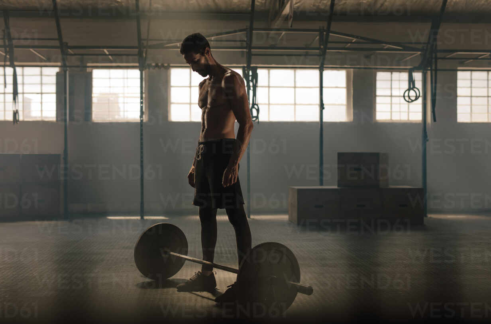
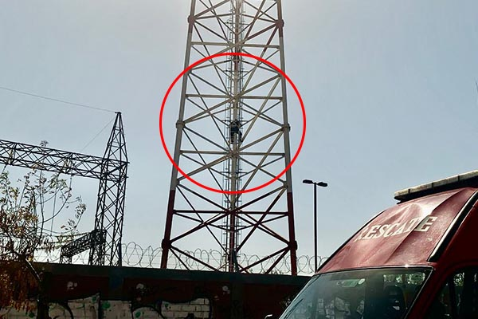
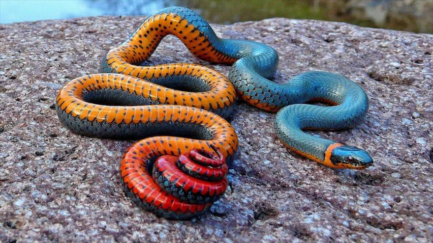
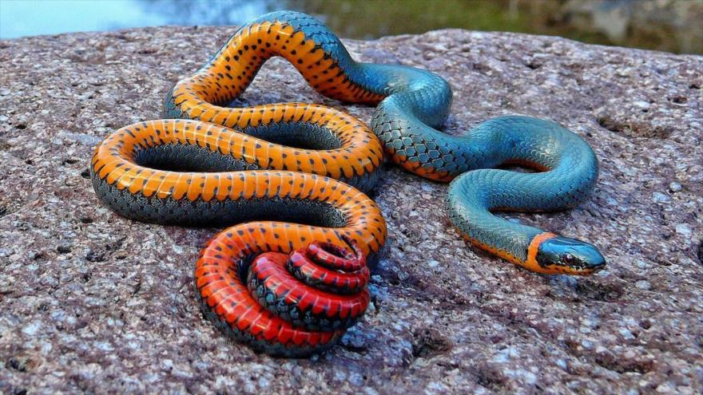

Byron Ramirez
Soy una persona amable, me gusta ayudar a las personas, soy alegre y cariñosa.
Contacto
- Teléfono: 56340140
- Facebook: Byron Rojop
- TikTok: Byron Ramirez
Datos Personales
- Fecha de nacimiento: 19 de mayo de 2011
- Lugar residencial: Lotificación Xelajú
- Lugar de nacimiento: Hospital de Coatepeque
Hobbies

Fobias

 

Comidas
Lista de Preferencias
- Equipo: Real Madrid
- Jugador: Cristiano Ronaldo
- Época: Otoño
- Color: Negro
- Animal: Perro
Datos Académicos
- Segundo básico - 2025 - NUFED Xelajú
- Primero básico - 2024 - NUFED Xelajú
- Sexto primaria - 2023 - Santa Rita
- Quinto primaria - 2022 - Santa Rita
- Cuarto primaria - 2021 - Santa Rita
- Tercero primaria - 2020 - Santa Rita
- Segundo primaria - 2019 - Santa Rita
- Primero primaria - 2018 - Santa Rita